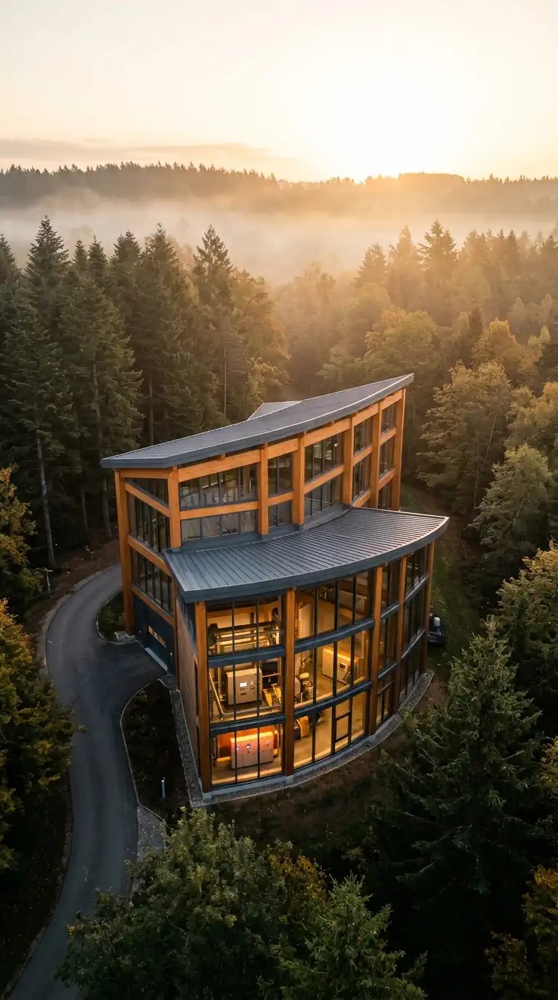
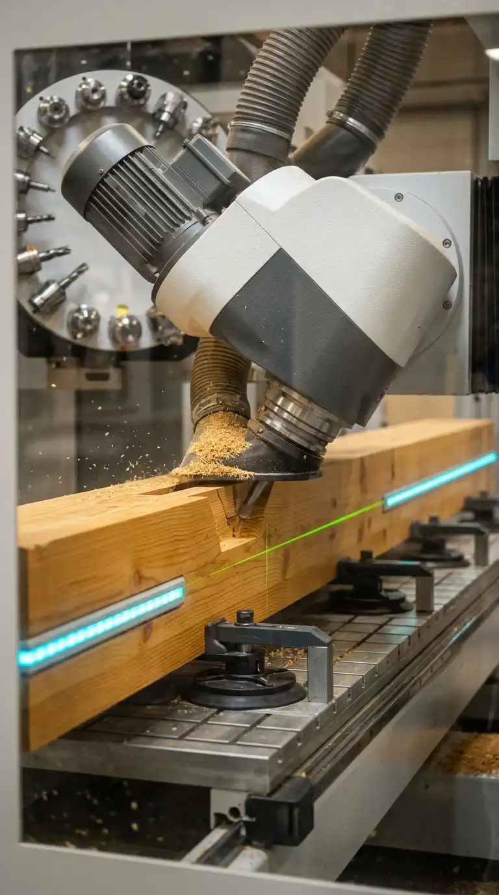
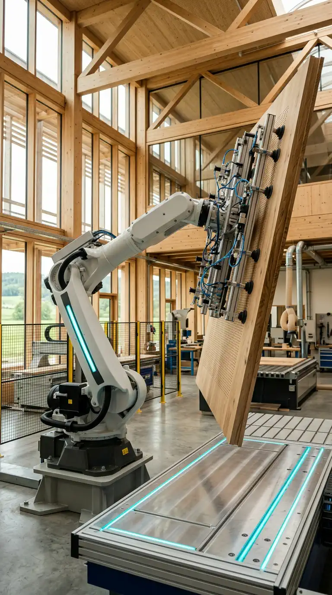
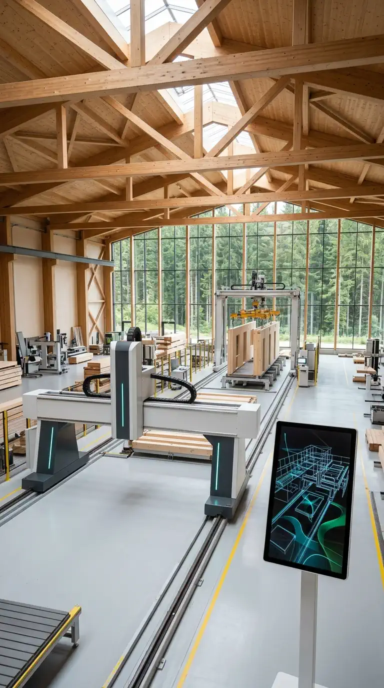
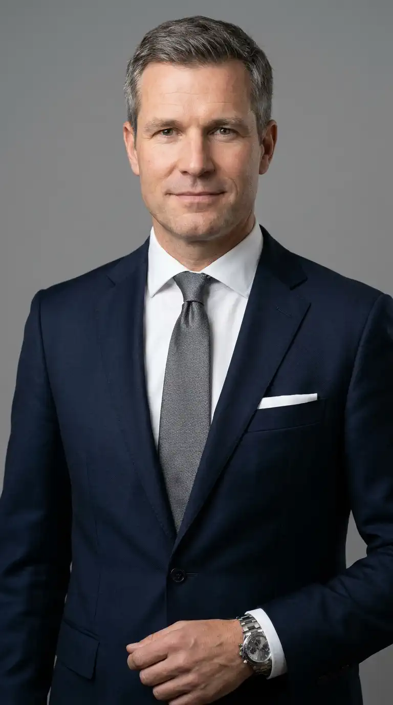
CENTATEQ) mit grünem Laser & Cyan-LED am Massivholzbalken.
FEEDBOT in Signalweiß/Anthrazit) schwenkt mit Vielzonen-Vakuumtraverse schwere Holzplatten über den Luftkissentisch.
powerTouch2 3D-Cockpit.
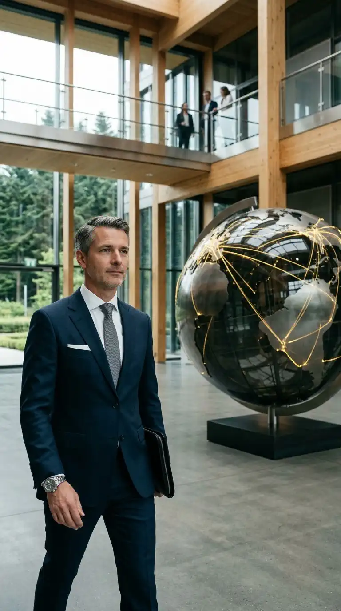
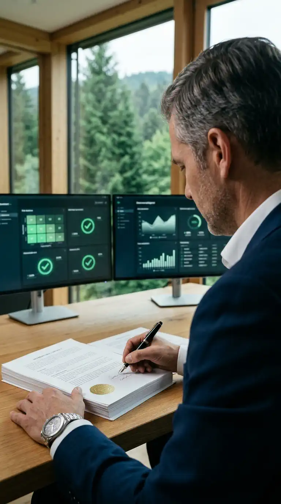
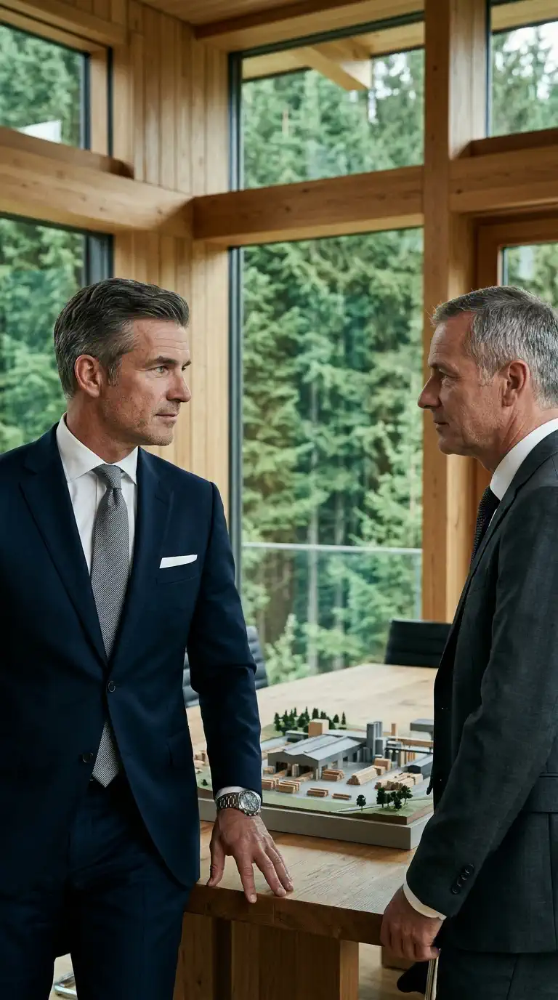
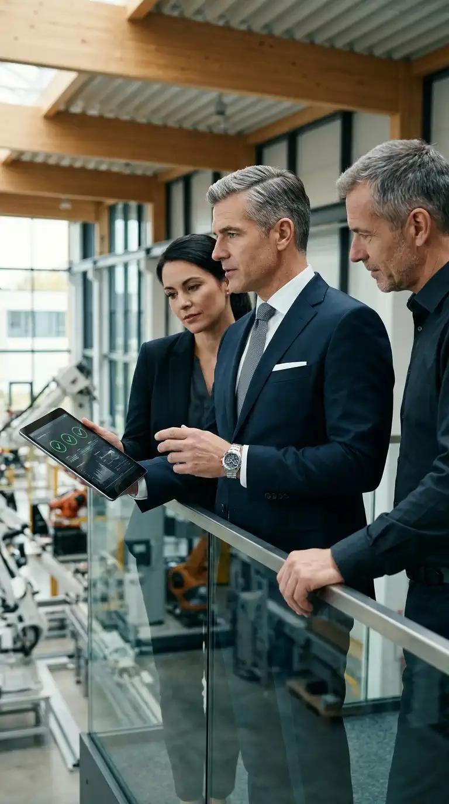
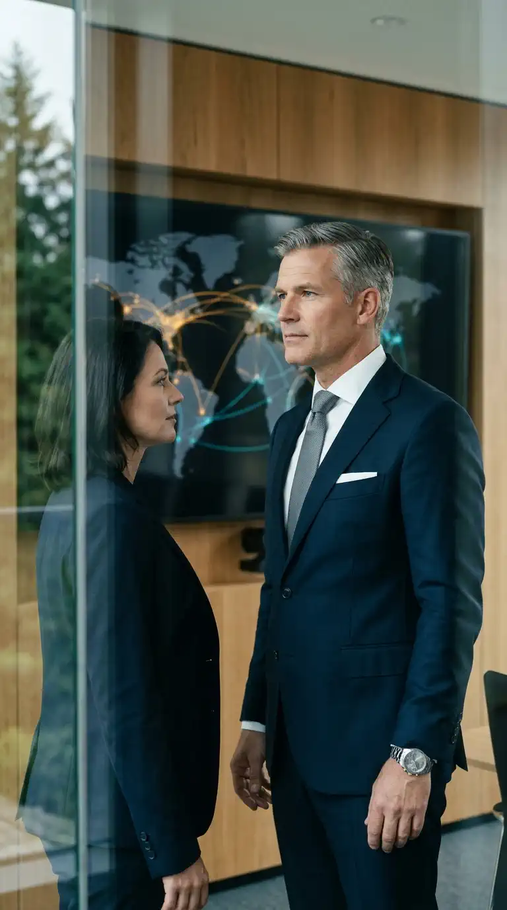
->)
35mm Atrium-Shot: Johannes schreitet mit Ledermappe von links nach rechts (->) durch das Holz-Glas-Headquarter-Foyer an der leuchtenden 3D-Weltkugel vorbei.
->): Johannes prüft vor Schwarzwaldtannen-Fenster Vertragswerk mit Siegel & Risiko-Matrix (grüne Häkchen ✓).
->) im Dialog mit Vertriebsleiter rechts (<-) am 3D-Anlagenmodell vor Tannen-Kulisse.
<-): Johannes mit Projektleiterin & Chef-Ingenieur auf der Hallen-Empore mit Tablet (3 grüne ✓✓✓).
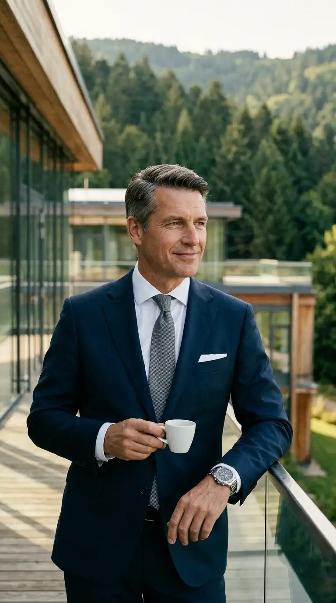
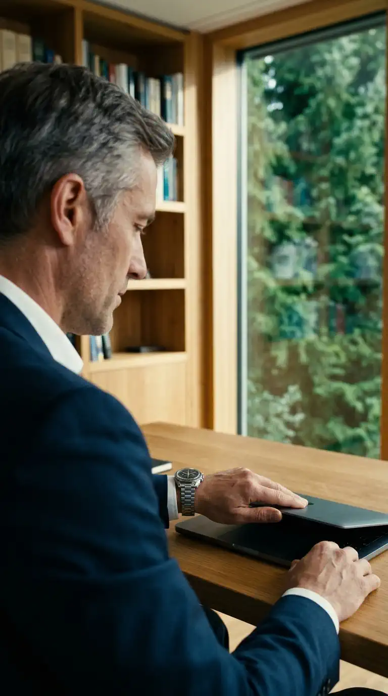
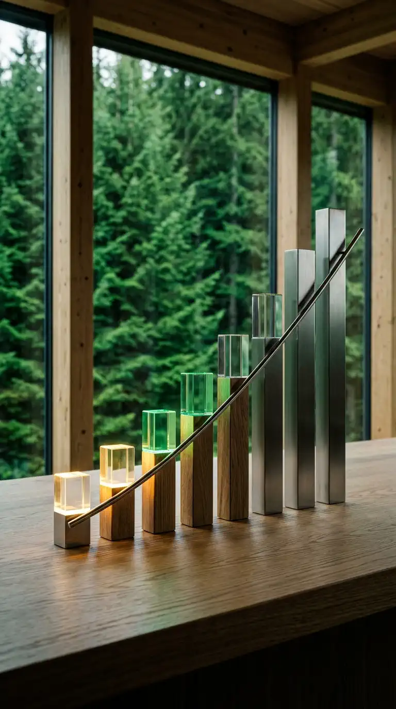
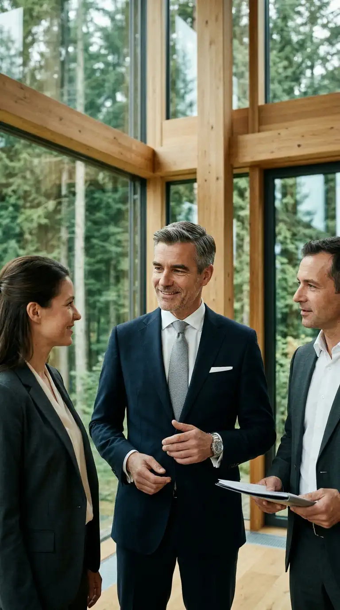
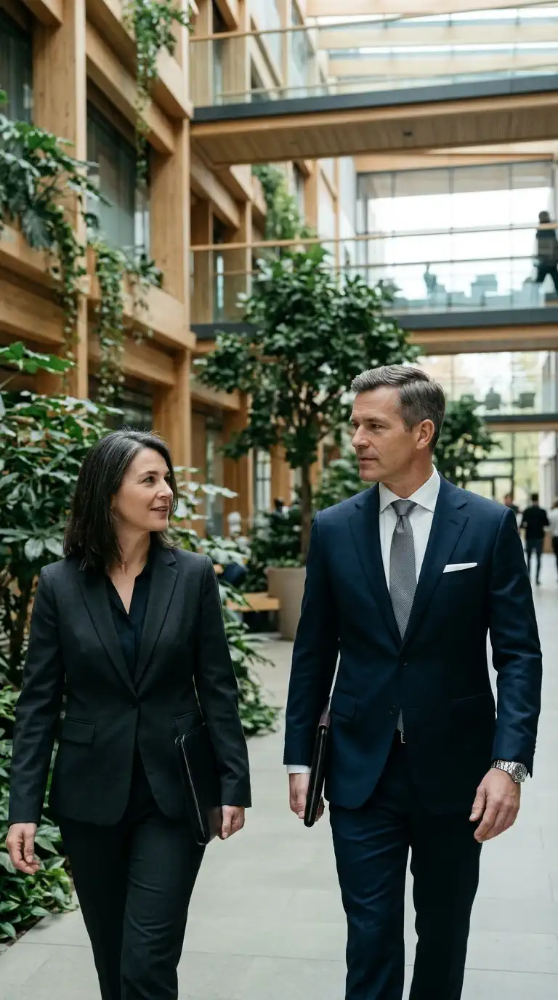
->): Johannes mit Espresso auf der sonnigen Holz-Dachterrasse des Campus vor Schwarzwaldtannen.
<-): Johannes klappt im edlen Homeoffice entspannt das Notebook zu (3 Tage Campus / 2 Tage Remote).
^): Johannes mittig im wertschätzenden Austausch mit zwei Juristen-Kollegen in der Holz-Glas-Lounge.
->/<-): Johannes rechts und Führungskraft links schreiten nach Strategie-Workshop durch das begrünte Atrium.
E1_start.jpg — 0,0s bis 3,5s): Runder Eichenholztisch mit zwei weißen Espressotassen im Holz-Glas-Campus. Johannes (links) sitzt aufrecht, beide Hände ruhen ordentlich auf der Tischplatte. Ulrike Epple (rechts, 1:1 Referenz) hält den Deckel der einzelnen dunkelblauen Exposé-Mappe im 40°-Winkel und klappt sie ruhig und entschlossen zu.E1.jpg — 3,5s bis 10,0s): Beide lächeln sich herzlich an (Lippen geschlossen, 0 % Lip-Sync), reichen sich über die geschlossene Mappe hinweg die rechte Hand und schütteln sich warm und verbindlich die Hand bis zum allerletzten Frame bei 10,0s (endet mitten in der Handschüttelbewegung).
• Weibliche Executive-Search-Off-Stimme (120 Wörter / 60s): Durchgehend warme, reife, souveräne Frauenstimme (voice_sxnxo8szc4vy) als vertrauensvolles Off-Voiceover über alle 4 Phasen (22 + 38 + 38 + 22 = 120 Wörter, 0 % Lip-Sync).
• 15-Shot High-Tech- & Executive-Dramaturgie: 4× Hightech-Intro (A1_start, B1–B3), 5× Aufgaben (C1–C5), 5× Benefits mit Börsenkonzern im Zentrum (D1–D5) und persönliches Duo mit Ulrike Epple (E1_start → E1).
• Overlay-Governance: Keine künstlichen Overlay-Boxen in A, B oder E; im Schnittprogramm dient der gesprochene Text als edler Untertitel für LinkedIn (Sound-Off-Optimierung).
| # | Shot | Zeitcode | Schnitt / VEO | Einstellung, Perspektive & Besetzung | Kamerabewegung & Kinetik | Single-Reference Startframe |
|---|---|---|---|---|---|---|
| 1 | A1_start | 00:00–00:02.5 | 2.5s (VEO 4s) | 24mm Aerial-Orbit (0 Pers.: Schwarzwald-Nebel → Holz-Glas-Campus) | Curved Aerial Orbit & Gentle Descent | images/final/A1_start.jpg |
| 2 | B1 | 00:02.5–00:05.0 | 2.5s (VEO 4s) | 85mm Close-Up durch Sicherheitsglas (0 Pers.: 5-Achs-Spindel & Laser) | Dynamic Gimbal Tracking an Frässpindel | images/final/B1.jpg |
| 3 | B2 | 00:05.0–00:07.5 | 2.5s (VEO 4s) | 50mm Medium Action-Shot (0 Pers.: 6-Achs-Roboter mit Vakuumtraverse) | Smooth Dynamic Arc Pan über Luftkissentisch | images/final/B2.jpg |
| 4 | B3 | 00:07.5–00:10.0 | 2.5s (VEO 4s) | 28mm High-Angle Wide (0 Pers.: 12m CNC-Portalbrücke & 3D-Cockpit) | Elevated Crane Push-In durch Holzbauhalle | images/final/B3.jpg |
| 5 | C1 | 00:10–00:14 | 4.0s | 35mm Atrium-Shot (1 Pers.: Johannes schreitet -> an 3D-Weltkugel vorbei) | Smooth Lateral Tracking Shot (->) | images/final/C1.jpg |
| 6 | C2 | 00:14–00:18 | 4.0s | Tight OTS (1 Pers.: Johannes Schulter rechts -> vor Vertrag & Screens) | Tight OTS Push-In + Rack Focus | images/final/C2.jpg |
| 7 | C3 | 00:18–00:22 | 4.0s | Tight Medium Two-Shot (2 Pers.: Johannes links -> + Vertriebsleiter <-) | Slow Dolly In auf 3D-Anlagenmodell | images/final/C3.jpg |
| 8 | C4 | 00:22–00:26 | 4.0s | Tight Medium Three-Shot Galerie (3 Pers.: Johannes Mitte <- + Team) | Slow Cinematic Arc auf Hallen-Empore | images/final/C4.jpg |
| 9 | C5 | 00:26–00:30 | 4.0s | Tight Through-Window Shot (2 Pers.: Johannes + Counsel vor Weltkarte) | Through-Window + Slow Pan Left | images/final/C5.jpg |
| 10 | D1 | 00:30–00:34 | 4.0s | Tight Hero Medium Shot (1 Pers.: Johannes links -> auf Dachterrasse) | Truck Right (Parallax vor Schwarzwaldtannen) | images/final/D1.jpg |
| 11 | D2 | 00:34–00:38 | 4.0s | Tight OTS Homeoffice (1 Pers.: Johannes Schulter links <- am Laptop) | Subtle Push-In + Rack Focus ins Grüne | images/final/D2.jpg |
| 12 | D3 | 00:38–00:42 | 4.0s | Pure 3D-Architektur-Skulptur (0 Pers.: 8 aufsteigende Eichen-/Stahlsäulen) | Push-In + Licht steigt in Smaragdgrün & hält | images/final/D3.jpg |
| 13 | D4 | 00:42–00:46 | 4.0s | Tight Medium Three-Shot Lounge (3 Pers.: Johannes Mitte ^ + 2 Juristen) | Slow Cinematic Arc in Holz-Glas-Lounge | images/final/D4.jpg |
| 14 | D5 | 00:46–00:50 | 4.0s | Tight Medium Two-Shot Atrium (2 Pers.: Johannes rechts <- + Führungskraft) | Context Reveal Dolly Out im begrünten Atrium | images/final/D5.jpg |
| 15 | E1 | 00:50–01:00 | 10.0s | Medium Two-Shot Eichenholztisch (2 Pers.: Johannes + Ulrike Epple) | Mappe zuklappen → Handschlag bis Schluss (E1.jpg) | images/final/E1_start.jpg |
gen-lang-client-0119524662 • Modell: gemini-3.8-flash-tts • Voice-ID: voice_sxnxo8szc4vy (Souveräne weibliche Executive-Search-Stimme)"speech_config": {
"voice_id": "voice_sxnxo8szc4vy",
"style": "calm, warm, cultivated, trustworthy pace",
"persona_prompt": "A warm, cultured, sovereign 48-year-old German female executive search partner and narrator speaking with calm authority, natural elegance, and deep trustworthiness. Smooth, resonant mezzo-soprano voice, measured pacing at 2 words per second, zero artificial hype."
}Part 1 — Szene A & B (00:00 – 00:10 | 10.0s Phase 1 Hook & Hightech-Robotik | 22 Wörter):
Weibliches Off-Voiceover (Szene A & B – 22 Wörter): „Große internationale Verträge brauchen keinen Großstadtlärm – sondern Weitblick. Steuern Sie beim Hightech-Weltmarktführer im Nordschwarzwald vernetzte Großanlagenprojekte rechtlich und kaufmännisch mit eigenverantwortlichem Gestaltungsbereich.“
Part 2 — Szene C (00:10 – 00:30 | 20.0s Phase 2 Umfeld & Mission C1–C5 | 38 Wörter):
Weibliches Off-Voiceover (Szene C – 38 Wörter): „In einer führenden Unternehmensgruppe mit über einer Milliarde Euro Jahresumsatz gestalten Sie internationale Anlagenverträge, begleiten frühzeitig strategische Vertriebsverhandlungen und sichern laufende Großprojekte durch proaktives Claim Management. ... Als zentrale Gruppenfunktion beraten Sie technische Fachbereiche und unterstützen aktiv weltweite Tochtergesellschaften.“
Part 3 — Szene D (00:30 – 00:50 | 20.0s Phase 3 Standort, Börsenkonzern & Kultur D1–D5 | 38 Wörter):
Weibliches Off-Voiceover (Szene D – 38 Wörter): „Dabei verbinden Sie hohe Lebensqualität am modernen Campus im Nordschwarzwald mit zwei festen Tagen Homeoffice pro Woche. ... Sie bauen auf die Stärke eines börsennotierten Industriekonzerns, genießen hohes Ansehen im erfahrenen Expertenteam und nutzen individuelle Weiterbildungs- sowie vielseitige Gesundheitsangebote.“
Part 4 — Szene E (00:50 – 01:00 | 10.0s Phase 4 Vertraulicher CTA Ulrike Epple | 22 Wörter):
Weibliches Off-Voiceover (Szene E – 22 Wörter): „Frau Epple begleitet dieses Mandat persönlich und mit höchster Diskretion. Nehmen Sie gerne Kontakt auf für ein erstes, vertrauliches Gespräch auf Augenhöhe.“
{
"comments": [
"shot-id: A1_start",
"titel: 4.0s (Schnitt 2.5s) Phase 1 Intro 1 - Dynamischer Orbit-Drohnenanflug aus dem Schwarzwaldnebel vor die leuchtende Holz-Glas-Fassade",
"referenzen: NUR images/final/A1_start.jpg als First-Frame hochladen"
],
"project_settings": { "resolution": "1K", "aspect_ratio": "9:16", "duration": "4s", "fps": 30 },
"first_frame_reference": "Anchored strictly to the uploaded first frame (A1_start.jpg) showing the elevated aerial view above misty dark-green Black Forest fir trees at golden dawn approaching the illuminated timber-and-glass campus.",
"visual_prompt": "ONE CONTINUOUS UNBROKEN SHOT, ZERO CUTS. Dynamic curving aerial drone orbit and smooth descent out of the golden morning mist over the dark-green Black Forest fir tree tops, banking gracefully down toward the illuminated timber-and-glass headquarters facade (HOMAG Experience Center style) with warm interior lights and visible glulam timber columns glowing behind floor-to-ceiling glass. Strictly NO people in the frame (0 persons).",
"audio": { "type": "ambient_only", "soundscape": "Gentle morning wind over Black Forest fir tops transitioning into a deep, warm, prestigious cinematic pulse, zero voices, absolute vocal silence." },
"constraints": { "negative": "talking, moving lips, open mouth, speaking, whispering, vocalizations, dialogue, subtitles, people, faces, city skyscrapers, readable text, logos, cuts" }
}
{
"comments": [
"shot-id: B1",
"titel: 4.0s (Schnitt 2.5s) Phase 1 Intro 2 - 5-Achs-CNC-Hochleistungs-Frässpindel mit Cyan-LED & grünem Laser (85mm Makro)",
"referenzen: NUR images/final/B1.jpg als First-Frame hochladen"
],
"project_settings": { "resolution": "1K", "aspect_ratio": "9:16", "duration": "4s", "fps": 30 },
"first_frame_reference": "Anchored strictly to the 85mm close-up in the uploaded first frame (B1.jpg) looking through the safety glass into the illuminated 5-axis CNC machining cell with matte signal-white and anthracite spindle housing, cyan LED strip, and green laser line on the timber beam.",
"visual_prompt": "ONE CONTINUOUS UNBROKEN SHOT, ZERO CUTS. Dynamic gimbal tracking shot looking through the panoramic safety glass window. Strictly NO people in the frame (0 persons). The sleek matte signal-white and anthracite 5-axis CNC milling spindle tilts smoothly on its gimbal head and glides along the massive glued-laminated timber beam as the bright green positioning laser scans across the wood grain and a fine golden stream of wood micro-chips arcs away under the cyan LED accent light.",
"audio": { "type": "ambient_only", "soundscape": "High-tech precision servo hum and clean muffled CNC milling acoustics behind safety glass, zero voices, absolute vocal silence." },
"constraints": { "negative": "talking, moving lips, open mouth, speaking, vocalizations, dialogue, subtitles, people, faces, hands, readable brand names, text, cuts" }
}
{
"comments": [
"shot-id: B2",
"titel: 4.0s (Schnitt 2.5s) Phase 1 Intro 3 - 6-Achs-Industrieroboter schwenkt Akustik-Holzplatte mit Vakuumtraverse",
"referenzen: NUR images/final/B2.jpg als First-Frame hochladen"
],
"project_settings": { "resolution": "1K", "aspect_ratio": "9:16", "duration": "4s", "fps": 30 },
"first_frame_reference": "Anchored strictly to the 50mm medium action shot in the uploaded first frame (B2.jpg) showing the matte signal-white and anthracite 6-axis industrial robot with its multi-zone vacuum suction gantry lifting an oak acoustic panel above the cyan-lit air-cushion table.",
"visual_prompt": "ONE CONTINUOUS UNBROKEN SHOT, ZERO CUTS. Smooth dynamic arc pan following the heavy 6-axis industrial robot inside the timber-and-glass factory hall. Strictly NO people in the frame (0 persons). With effortless, synchronized kinematics, the robot arm and its multi-zone vacuum suction gantry lift and pivot the precision-milled oak panel smoothly across the cyan-illuminated air-cushion conveyor table toward the automated stacking station.",
"audio": { "type": "ambient_only", "soundscape": "Soft pneumatic vacuum suction lock and smooth multi-axis robotic servo motion, zero voices, absolute vocal silence." },
"constraints": { "negative": "talking, moving lips, open mouth, speaking, vocalizations, dialogue, subtitles, people, faces, hands, readable text, logos, cuts" }
}
{
"comments": [
"shot-id: B3",
"titel: 4.0s (Schnitt 2.5s) Phase 1 Intro 4 - Vollvernetzte Smart-Factory-Holzbaulinie, Hallenkran & 3D Digital-Twin-Cockpit",
"referenzen: NUR images/final/B3.jpg als First-Frame hochladen"
],
"project_settings": { "resolution": "1K", "aspect_ratio": "9:16", "duration": "4s", "fps": 30 },
"first_frame_reference": "Anchored strictly to the 28mm high-angle wide shot in the uploaded first frame (B3.jpg) showing the automated CNC multifunction portal bridge over a timber wall element on the left, yellow overhead gantry crane above, and vertical 3D digital-twin terminal on the right.",
"visual_prompt": "ONE CONTINUOUS UNBROKEN SHOT, ZERO CUTS. Elevated wide-angle crane push-in through the sunlit timber-beam smart factory hall. Strictly NO people in the frame (0 persons). On the left, the 12-meter white CNC multifunction portal bridge glides smoothly over the prefabricated timber house wall element while the overhead crane carries a massive glulam beam in the background; on the right foreground, the glowing 3D digital-twin wireframe model rotates slightly with pulsing green checkmark icons.",
"audio": { "type": "ambient_only", "soundscape": "Spacious high-tech smart factory ambience, synchronized portal kinematics, subtle digital telemetry pulse, zero voices, absolute vocal silence." },
"constraints": { "negative": "talking, moving lips, open mouth, speaking, vocalizations, dialogue, subtitles, people, faces, readable text on portal beams, brand logos, cuts" }
}
{
"comments": [
"shot-id: E1",
"titel: 10.0s Phase 4 Vertraulicher CTA - Ulrike Epple & Johannes Bergmann: Mappe zuklappen -> Handschlag bis zum Schluss (0% Lip-Sync)",
"referenzen: NUR images/final/E1_start.jpg als First-Frame hochladen (Zielbild ab 3,5s entspricht E1.jpg)"
],
"project_settings": { "resolution": "1K", "aspect_ratio": "9:16", "duration": "10s", "fps": 30 },
"first_frame_reference": "Anchored strictly to the uploaded first frame (E1_start.jpg) showing Johannes Bergmann seated on the left (both hands resting calmly on the round oak table) and Ulrike Epple seated on the right (holding the lifted top cover of the single dark-blue leather dossier folder at a 40-degree angle) with two white espresso cups and the timber-glass campus visible outside.",
"visual_prompt": "ONE CONTINUOUS UNBROKEN SHOT, ZERO CUTS. Gentle, sovereign slow push-in toward the round solid-oak meeting table. During the first three seconds, Ulrike Epple on the right calmly and decisively lowers the lifted cover of the single dark-blue leather dossier folder until it lies completely flat and closed on the oak tabletop. Immediately afterward, Ulrike Epple and Johannes Bergmann look into each other's eyes with warm, appreciative closed-lip smiles, extend their right hands across the closed dark-blue folder in the center of the table, clasp right hands firmly, and shake hands warmly and continuously right through to the very last frame at 10.0 seconds (ending mid-handshake without letting go). Both maintain zero camera awareness, keeping lips firmly sealed and mouths completely closed throughout the entire 10-second shot (0% lip-sync).",
"audio": { "type": "ambient_only", "soundscape": "Soft leather folder closing onto oak wood, warm appreciative executive room acoustics, gentle musical resolution, zero voices, absolute vocal silence." },
"constraints": { "negative": "talking, moving lips, open mouth, speaking, whispering, mumbling, vocalizations, dialogue, subtitles, looking at camera, second folder, readable text, cuts" }
}
{
"comments": [
"shot-id: C1",
"titel: 4.0s Phase 2 Mission 1 - 1,3 Mrd. € Weltmarktführer-Atrium mit leuchtender 3D-Weltkugel & Johannes (Tracking ->)",
"referenzen: NUR images/final/C1.jpg als First-Frame hochladen (NICHT Avatar.jpg!)"
],
"project_settings": { "resolution": "1K", "aspect_ratio": "9:16", "duration": "4s", "fps": 30 },
"first_frame_reference": "Anchored strictly to the 35mm architectural shot in the uploaded first frame (C1.jpg) inside the two-story timber-and-glass headquarters atrium showing the 2.5-meter stainless-steel and oak 3D globe sculpture with glowing golden nodes and Johannes walking from left to right (->) with a leather portfolio.",
"visual_prompt": "ONE CONTINUOUS UNBROKEN SHOT, ZERO CUTS. Smooth lateral tracking shot following Johannes Bergmann from left to right (->) as he walks with calm executive stride through the sunlit timber-and-glass headquarters atrium past the monumental 2.5-meter stainless-steel and oak 3D globe sculpture. Warm golden network nodes pulse gently across the continents on the globe. Johannes maintains zero camera awareness, keeping lips firmly sealed and mouth completely closed throughout the entire shot.",
"audio": { "type": "ambient_only", "soundscape": "Confident footsteps on polished stone floor, spacious sunlit headquarters atrium acoustics, subtle global pulse tone, zero voices, absolute vocal silence." },
"constraints": { "negative": "talking, moving lips, open mouth, speaking, whispering, vocalizations, dialogue, subtitles, looking at camera, readable text, cuts" }
}
{
"comments": [
"shot-id: C2",
"titel: 4.0s Phase 2 Mission 2 - Prüfung internationaler Anlagenverträge & Bürgschaften (Tight OTS)",
"referenzen: NUR images/final/C2.jpg als First-Frame hochladen"
],
"project_settings": { "resolution": "1K", "aspect_ratio": "9:16", "duration": "4s", "fps": 30 },
"first_frame_reference": "Anchored strictly to the tight over-the-shoulder view over Johannes's right shoulder in the uploaded first frame (C2.jpg) at his oak desk before the window with Black Forest fir trees, showing his steel chronograph watch, fountain pen over the contract with seal emblem, and dual 4K monitors with checkmarks.",
"visual_prompt": "ONE CONTINUOUS UNBROKEN SHOT, ZERO CUTS. Tight over-the-shoulder push-in with subtle rack focus from the contract document to the dual 4K monitors. Johannes's right hand smoothly underlines a clause with the black fountain pen while his left hand with the steel chronograph rests calmly on the document margin. On the monitors, green checkmark symbols pulse gently. Johannes keeps lips firmly sealed and mouth completely closed throughout the entire shot.",
"audio": { "type": "ambient_only", "soundscape": "Subtle glide of a fountain pen nib on heavy paper, quiet executive office acoustics, soft digital confirmation chime, zero voices, absolute vocal silence." },
"constraints": { "negative": "talking, moving lips, open mouth, speaking, whispering, mumbling, vocalizations, dialogue, subtitles, looking at camera, readable text, city skyscrapers, cuts" }
}
{
"comments": ["shot-id: C3", "titel: 4.0s Phase 2 Mission 3 - Frühe Verhandlungsbegleitung mit dem Vertrieb (Medium Two-Shot)", "referenzen: NUR images/final/C3.jpg als First-Frame hochladen"],
"project_settings": { "resolution": "1K", "aspect_ratio": "9:16", "duration": "4s", "fps": 30 },
"first_frame_reference": "Anchored strictly to the medium two-shot in the uploaded first frame (C3.jpg) showing Johannes on the left and the sales director on the right standing over the 3D plant model in the timber-and-glass conference room.",
"visual_prompt": "ONE CONTINUOUS UNBROKEN SHOT, ZERO CUTS. Slow dolly push-in toward Johannes on the left and the sales director on the right over the physical 3D plant model. Johannes gestures calmly with his right hand toward a section of the 3D factory model while the sales director nods in appreciative agreement. Both men maintain zero camera awareness, keeping lips firmly sealed and mouths completely closed throughout the entire shot.",
"audio": { "type": "ambient_only", "soundscape": "Quiet conference room acoustics, subtle rustle of suit fabric, soft tap on the architectural table, zero voices, absolute vocal silence." },
"constraints": { "negative": "talking, moving lips, open mouth, speaking, whispering, mumbling, vocalizations, dialogue, subtitles, looking at camera, glasses, city skyline, readable text, cuts" }
}
{
"comments": ["shot-id: C4", "titel: 4.0s Phase 2 Mission 4 - Proaktives Claim Management & Beratung der Technik (Medium Three-Shot Galerie)", "referenzen: NUR images/final/C4.jpg als First-Frame hochladen"],
"project_settings": { "resolution": "1K", "aspect_ratio": "9:16", "duration": "4s", "fps": 30 },
"first_frame_reference": "Anchored strictly to the medium three-shot on the mezzanine gallery in the uploaded first frame (C4.jpg) showing Johannes in the center with the female project manager and chief engineer reviewing the tablet with three green checkmarks above the assembly hall.",
"visual_prompt": "ONE CONTINUOUS UNBROKEN SHOT, ZERO CUTS. Slow cinematic arc movement around the three colleagues on the glass mezzanine gallery overlooking the automated timber production hall below. Johannes points calmly at the third green checkmark icon on the tablet screen while the female project manager and chief engineer nod in collegial alignment. All three maintain zero camera awareness, keeping lips firmly sealed and mouths completely closed throughout the entire shot.",
"audio": { "type": "ambient_only", "soundscape": "Muffled background hum of the automated production hall below, soft digital tablet tap, zero voices, absolute vocal silence." },
"constraints": { "negative": "talking, moving lips, open mouth, speaking, whispering, mumbling, vocalizations, dialogue, subtitles, looking at camera, readable text, cuts" }
}
{
"comments": ["shot-id: C5", "titel: 4.0s Phase 2 Mission 5 - Rechtliche Steuerung weltweiter Tochtergesellschaften (Through-Window Shot)", "referenzen: NUR images/final/C5.jpg als First-Frame hochladen"],
"project_settings": { "resolution": "1K", "aspect_ratio": "9:16", "duration": "4s", "fps": 30 },
"first_frame_reference": "Anchored strictly to the through-window shot in the uploaded first frame (C5.jpg) looking through the glass partition at Johannes and the female senior legal counsel before the global world map network screen.",
"visual_prompt": "ONE CONTINUOUS UNBROKEN SHOT, ZERO CUTS. Slow camera pan from right to left looking through the acoustic glass boardroom partition with subtle reflections of green fir trees. Inside, Johannes and his female legal colleague observe the glowing global network nodes pulsing smoothly across the world map display, sharing an appreciative nod with zero camera awareness, keeping lips firmly sealed and mouths completely closed throughout the entire shot.",
"audio": { "type": "ambient_only", "soundscape": "Serene executive boardroom ambience, soft electronic network pulse tone, zero voices, absolute vocal silence." },
"constraints": { "negative": "talking, moving lips, open mouth, speaking, whispering, mumbling, vocalizations, dialogue, subtitles, looking at camera, readable text on screen, cuts" }
}
{
"comments": ["shot-id: D1", "titel: 4.0s Phase 3 Benefit 1 - Hohe Lebensqualität am Holz-Glas-Campus im Nordschwarzwald (Hero Medium Shot)", "referenzen: NUR images/final/D1.jpg als First-Frame hochladen"],
"project_settings": { "resolution": "1K", "aspect_ratio": "9:16", "duration": "4s", "fps": 30 },
"first_frame_reference": "Anchored strictly to the hero medium shot in the uploaded first frame (D1.jpg) showing Johannes in the left third on the sunlit wooden rooftop terrace holding a white espresso cup and looking across the Black Forest hills.",
"visual_prompt": "ONE CONTINUOUS UNBROKEN SHOT, ZERO CUTS. Smooth truck right movement creating gentle parallax between Johannes on the sunlit timber rooftop terrace and the sweeping green Black Forest hills and fir trees in the background. Warm golden sunlight glints off his steel chronograph watch as fine steam rises from the white porcelain espresso cup. Johannes gazes peacefully across the forest landscape with a contented closed-lip smile and zero camera awareness, keeping lips firmly sealed and mouth completely closed.",
"audio": { "type": "ambient_only", "soundscape": "Gentle warm breeze over the rooftop terrace, distant soft birdsong and rustling fir trees in the Black Forest, zero voices, absolute vocal silence." },
"constraints": { "negative": "talking, moving lips, open mouth, speaking, whispering, mumbling, vocalizations, dialogue, subtitles, looking at camera, city buildings, cuts" }
}
{
"comments": ["shot-id: D2", "titel: 4.0s Phase 3 Benefit 2 - Flexibles 3+2 Hybrid-Modell mit 2 festen Tagen Homeoffice (Tight OTS)", "referenzen: NUR images/final/D2.jpg als First-Frame hochladen"],
"project_settings": { "resolution": "1K", "aspect_ratio": "9:16", "duration": "4s", "fps": 30 },
"first_frame_reference": "Anchored strictly to the tight over-the-shoulder view over Johannes's left shoulder in the uploaded first frame (D2.jpg) in his sunlit architectural home office closing the laptop lid on the oak desk.",
"visual_prompt": "ONE CONTINUOUS UNBROKEN SHOT, ZERO CUTS. Subtle push-in with smooth rack focus shifting from Johannes's hands gently closing the dark aluminum laptop lid to the warm afternoon sunlight streaming through the window onto the lush green trees outside. Johannes remains relaxed with zero camera awareness, keeping lips firmly sealed and mouth completely closed throughout the entire shot.",
"audio": { "type": "ambient_only", "soundscape": "Soft, satisfying magnetic click of the laptop lid closing, peaceful afternoon home office quietness, zero voices, absolute vocal silence." },
"constraints": { "negative": "talking, moving lips, open mouth, speaking, whispering, mumbling, vocalizations, dialogue, subtitles, looking at camera, messy cables, readable text, cuts" }
}
{
"comments": ["shot-id: D3", "titel: 4.0s Phase 3 Benefit 3 (Zentrum Strip D) - Börsennotierter Industriekonzern: 3D-Wachstums-Säulen steigen in Smaragdgrün", "referenzen: NUR images/final/D3.jpg als First-Frame hochladen"],
"project_settings": { "resolution": "1K", "aspect_ratio": "9:16", "duration": "4s", "fps": 30 },
"first_frame_reference": "Anchored strictly to the uploaded first frame (D3.jpg) showing the free-standing 3D architectural sculpture of 8 ascending columns crafted from oak, crystal glass, and brushed stainless steel in the sunlit atrium, where only the lower four columns glow with warm amber light.",
"visual_prompt": "ONE CONTINUOUS UNBROKEN SHOT, ZERO CUTS. Slow, prestigious cinematic push-in and slight low-angle tilt up toward the 8 ascending 3D architectural columns. Strictly NO people in the frame (0 persons). Starting from the lower columns, the internal LED illumination climbs smoothly upward from column 5 through column 8 like a rising wave of energy; as the light reaches the tallest column at the top right, the entire ascending sculpture transitions into a radiant emerald-green glow (#10b981) and holds steady in luminous green brilliance right through to the end of the shot.",
"audio": { "type": "ambient_only", "soundscape": "Spacious headquarters atrium acoustics, rising warm harmonic chord culminating in a clear, prestigious emerald resonance, zero voices, absolute vocal silence." },
"constraints": { "negative": "talking, moving lips, open mouth, speaking, whispering, vocalizations, dialogue, subtitles, people, faces, readable words, numbers, stock tickers, cuts" }
}
{
"comments": ["shot-id: D4", "titel: 4.0s Phase 3 Benefit 4 - Hohes internes Ansehen im erfahrenen Expertenteam (Medium Three-Shot Lounge)", "referenzen: NUR images/final/D4.jpg als First-Frame hochladen"],
"project_settings": { "resolution": "1K", "aspect_ratio": "9:16", "duration": "4s", "fps": 30 },
"first_frame_reference": "Anchored strictly to the medium three-shot in the uploaded first frame (D4.jpg) showing Johannes centered in the timber-and-glass lounge with the female legal counsel on the left and male contract specialist on the right before the Black Forest windows.",
"visual_prompt": "ONE CONTINUOUS UNBROKEN SHOT, ZERO CUTS. Slow cinematic arc movement around the three legal colleagues in the bright timber-and-glass lounge. Johannes in the center nods warmly to his colleagues on the left and right in an atmosphere of mutual respect and collegiality. All three maintain zero camera awareness, keeping lips firmly sealed and mouths completely closed in warm closed-lip smiles throughout the entire shot.",
"audio": { "type": "ambient_only", "soundscape": "Warm timber lounge acoustics, subtle rustle of movement, quiet appreciative atmosphere, zero voices, absolute vocal silence." },
"constraints": { "negative": "talking, moving lips, open mouth, speaking, whispering, mumbling, vocalizations, dialogue, subtitles, looking at camera, city skyline, cuts" }
}
{
"comments": ["shot-id: D5", "titel: 4.0s Phase 3 Benefit 5 - Individuelle Weiterbildung & Gesundheitsangebote im begrünten Atrium (Medium Two-Shot)", "referenzen: NUR images/final/D5.jpg als First-Frame hochladen"],
"project_settings": { "resolution": "1K", "aspect_ratio": "9:16", "duration": "4s", "fps": 30 },
"first_frame_reference": "Anchored strictly to the medium two-shot in the uploaded first frame (D5.jpg) showing Johannes on the right and the female executive on the left walking through the sunlit biophilic timber-and-glass atrium carrying conference folders.",
"visual_prompt": "ONE CONTINUOUS UNBROKEN SHOT, ZERO CUTS. Smooth context-reveal dolly out ahead of Johannes on the right and the female executive on the left as they walk at a relaxed pace through the sunlit, plant-filled timber-and-glass atrium. They exchange an appreciative nod and warm closed-lip smile with zero camera awareness, keeping lips firmly sealed and mouths completely closed throughout the entire shot.",
"audio": { "type": "ambient_only", "soundscape": "Calm footsteps on natural stone flooring, airy biophilic atrium ambience, zero voices, absolute vocal silence." },
"constraints": { "negative": "talking, moving lips, open mouth, speaking, whispering, mumbling, vocalizations, dialogue, subtitles, looking at camera, readable text, cuts" }
}